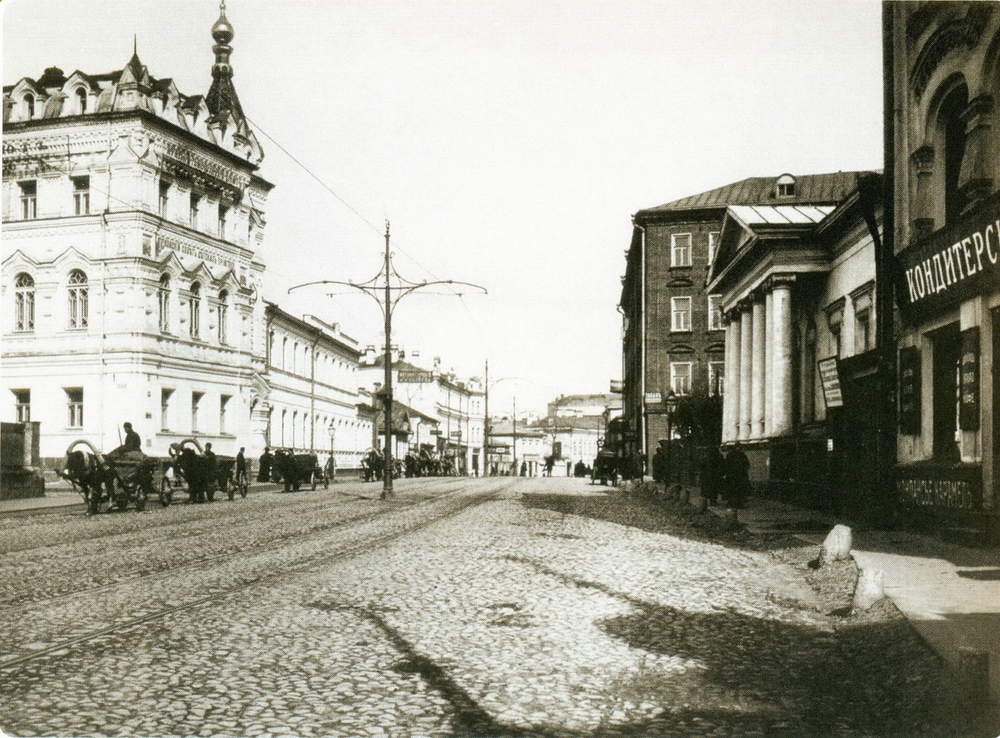
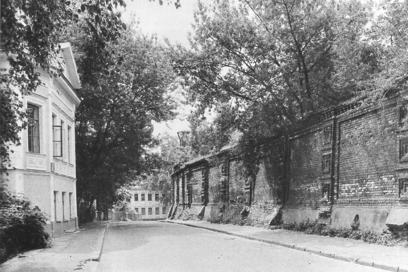
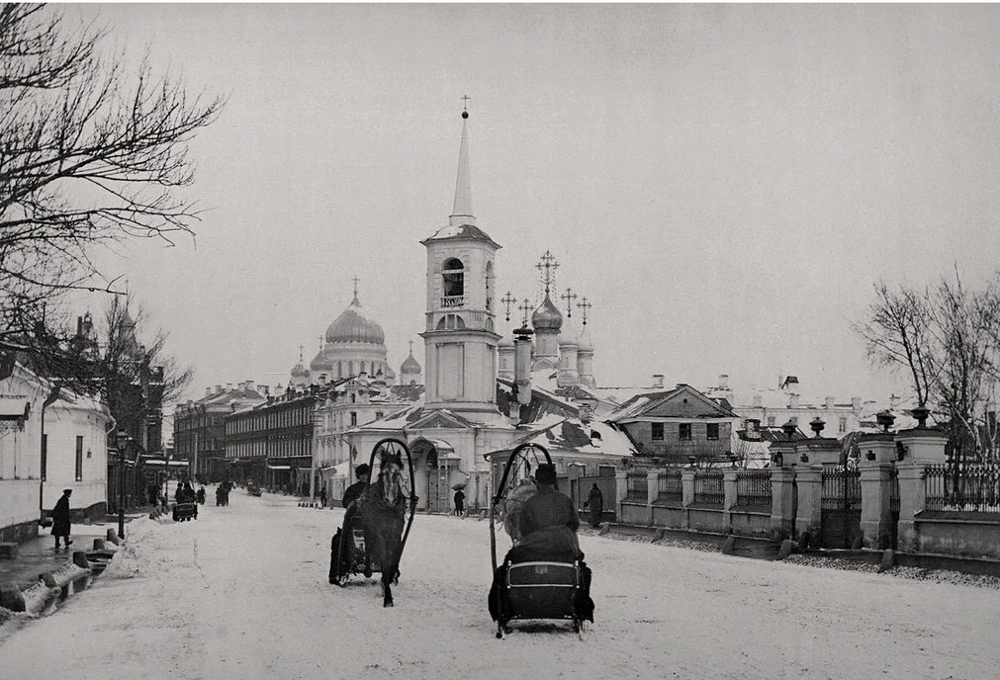

- Тип экскурсии: пешеходная
- Продолжительность: 2 часа
- Стоимость: бесплатно
- Место встречи: на площади перед павильоном м. Кропоткинская (выход №2)
- Ближайшие даты: смотрите календарь экскурсий
Словно прекрасная спящая красавица из сказки, Остоженка хранит свою красоту в течение многих веков. Вокруг бурлит жизнь, сменяют друг друга времена и эпохи, перекраивается облик города. А район Остожья по сей день остается для нас едва ли не последним островком той самой, безвозвратно ушедшей, старой Москвы.



Остоженка словно застыла в сомнамбулическом сне, стала миражом, который манит и притягивает любителей старины. Что было, что есть, что будет? Остоженка даст ответы на все вопросы, стоит только прислушаться к шепоту листвы ее старых тополей.